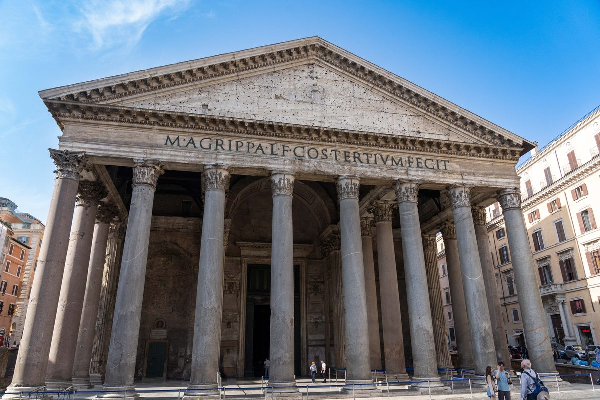
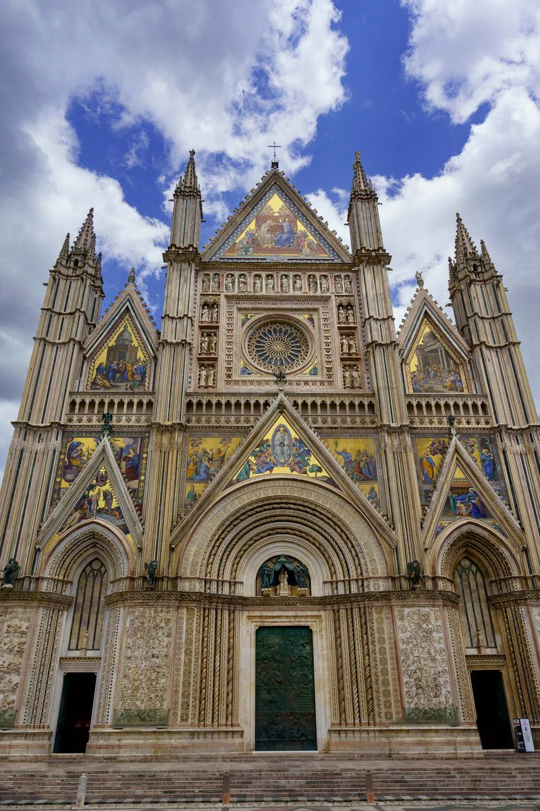
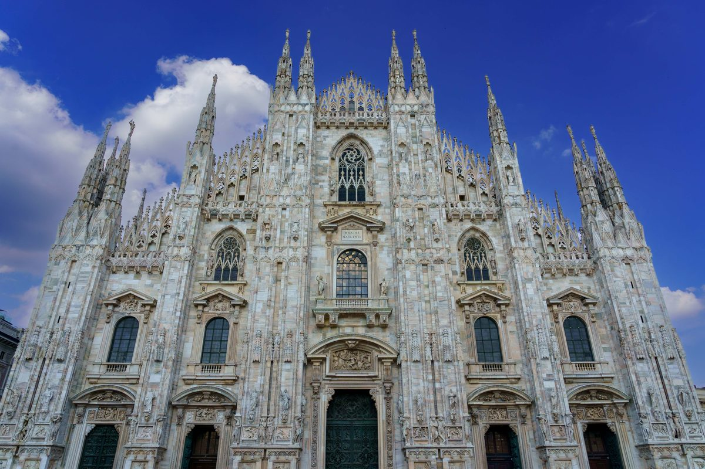
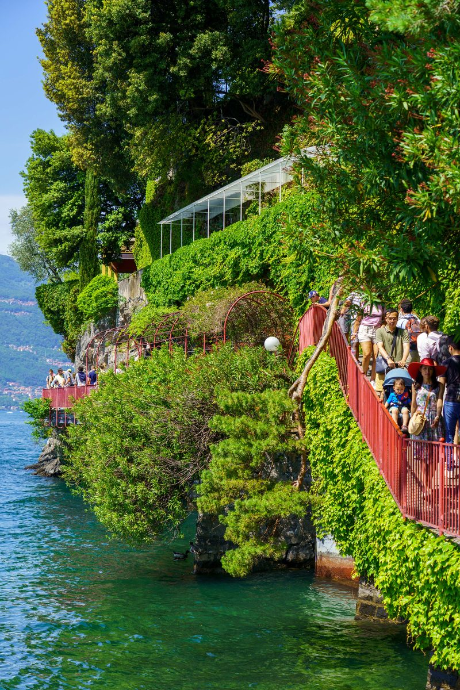
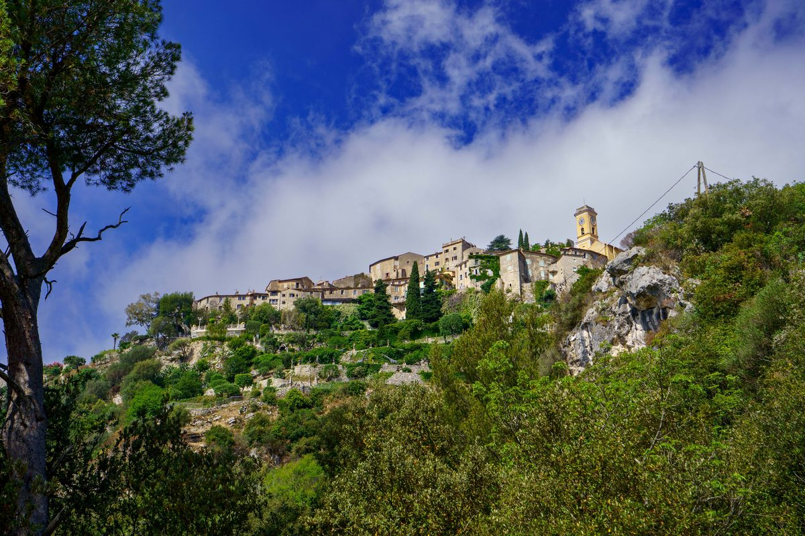
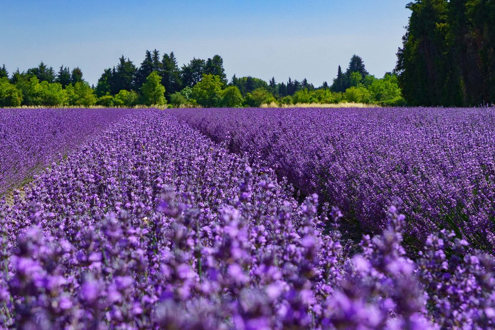
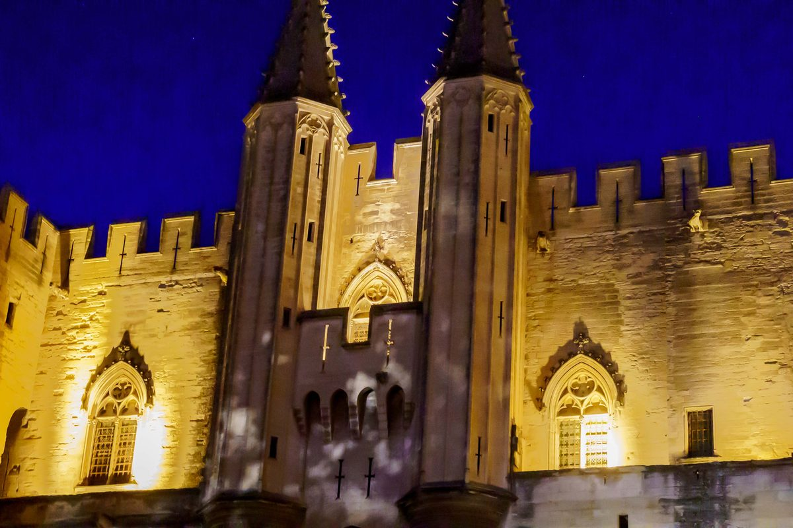
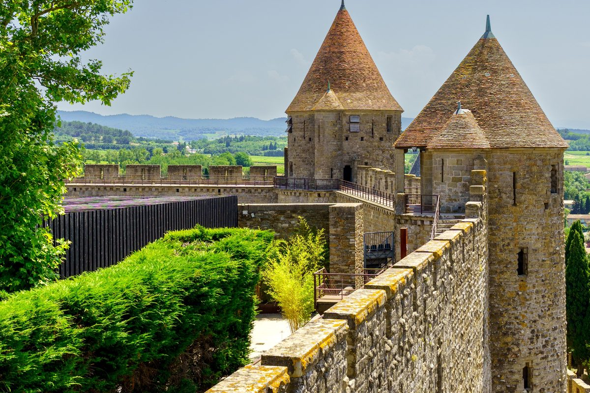
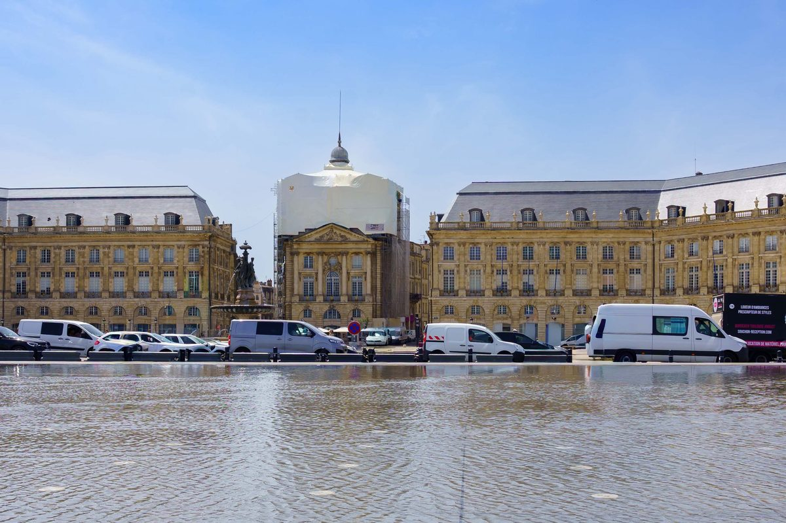

2022 Italy & France

Rome, Italy
Orvieto, Italy
Milan, Italy
Lake Como, Italy
Eze & the Côte d'Azur, France
Gordes & the Luberon, France
Avignon, Aix & the Rhône Valley, France
Carcassonne, France
Bordeaux & Saint-Émilion, France